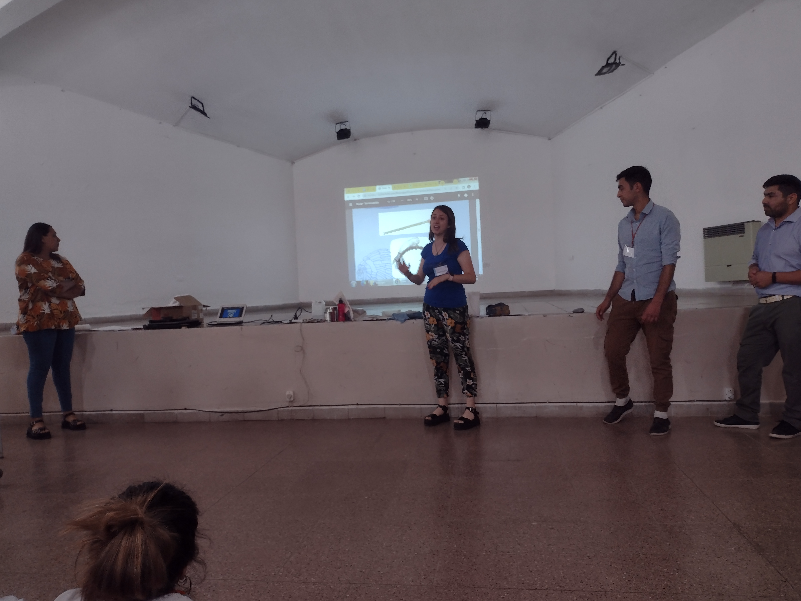
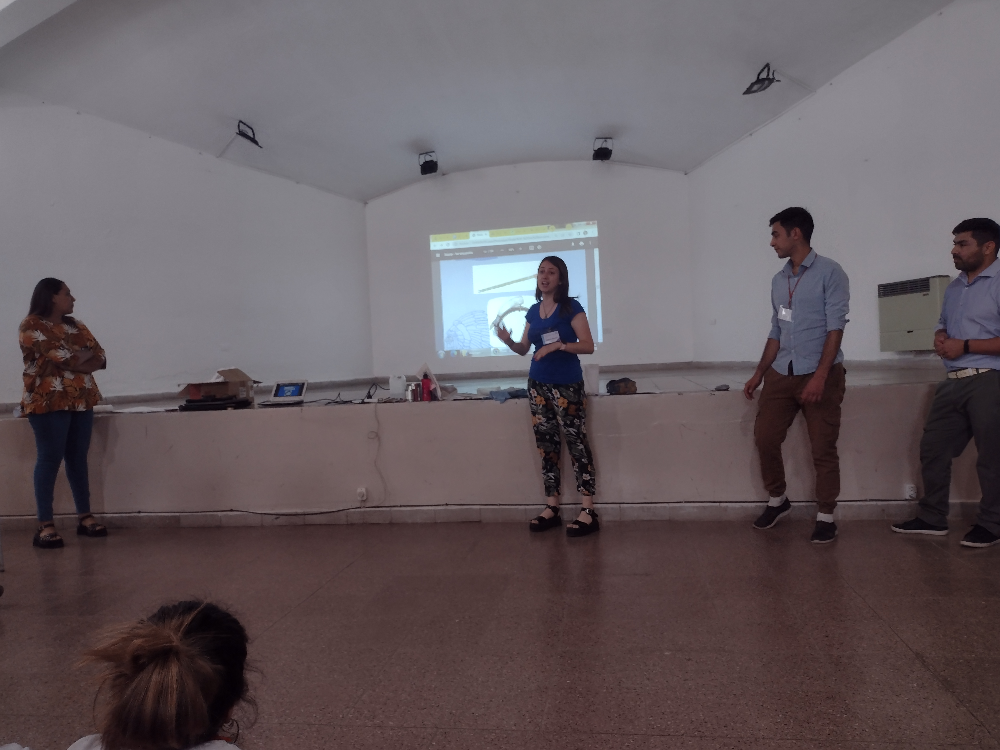

Innovando el Aula: Mi Viaje como Desarrollador Docente
Mi experiencia en las Prácticas para la Enseñanza fue más que una etapa formativa; fue un viaje de transformación y crecimiento. Desde el diseño meticuloso de programas educativos hasta la implementación en tiempo real en el aula, cada paso contribuyó a mi desarrollo como educador. La retroalimentación constante y la adaptabilidad se convirtieron en pilares fundamentales, reflejando la esencia de un aprendizaje continuo y centrado en el estudiante. Este viaje ha forjado mi identidad como desarrollador docente, resaltando la importancia de la mejora constante en el dinámico contexto educativo actual.
Mi Viaje Educativo
Mi viaje educativo ha sido un fascinante recorrido de transformación y crecimiento, desde las primeras fases de diseño de programas educativos hasta la implementación en el aula. Cada etapa ha sido una oportunidad para aprender, adaptarme y mejorar, reflejando la esencia de un proceso continuo centrado en el estudiante. La retroalimentación constante ha sido mi guía, destacando la importancia de la adaptabilidad y la mejora continua en este dinámico viaje educativo.
Microclases y Desarrollo Docente
La microclase representa un hito significativo en mi formación docente, equiparable a los primeros pasos en la creación de un prototipo. A través de esta simulación detallada, no solo exploré la implementación práctica de la enseñanza, sino que también perfeccioné mi capacidad de observación y reflexión. Cada microclase se convirtió en un prototipo educativo, sometido a evaluación y ajuste continuo, proporcionándome un valioso laboratorio pedagógico donde experimentar, cometer errores y evolucionar como educador.

Odisea de las Microclases
La odisea de la microclase fue una inmersión profunda en la observación como interfaz educativa. Inspirado por las teorías de Anijovich, Ruiz, Ferrero y Martín, cada momento de la clase fue delineado meticulosamente, como líneas de código que definían la experiencia del estudiante. A través de esta odisea, me convertí en un arquitecto de conocimiento, recopilando datos, estableciendo secuencias y analizando patrones. La observación se transformó en una habilidad esencial, una aptitud que desarrollé y perfeccioné, siguiendo las enseñanzas de Papert sobre cómo la tecnología del aula moldea el pensamiento. Este viaje educativo no solo fue un proceso para producir conocimiento, sino también una herramienta para desentrañar la lógica de la práctica docente y mejorar de manera continua, tal como propusieron Ferrero y Martín en su análisis de la comunicación no verbal en el aula.
Reflexiones sobre la Planificación Docente
La reflexión sobre la planificación docente se asemeja a la tarea de diseñar meticulosamente el código de aprendizaje. Experimenté con diversas estrategias, enfrentándome a desafíos educativos como los programadores con líneas de código. La planificación se convierte en una búsqueda constante de la solución más eficiente, tal como describe Harf. Al adoptar la enseñanza para la comprensión, las metas de comprensión se volvieron los objetivos fundamentales de mi planificación, guiando a los estudiantes hacia la capacidad de resolver problemas reflexivamente. Aquí, las palabras de Perkins resuenan, destacando que la comprensión va más allá del conocimiento (Díaz, 2013). En este proceso de planificación, los temas generativos actuaron como algoritmos conductores, enlazando conceptos clave. Este enfoque se asemejó a diseñar líneas de código que definían la lógica del aprendizaje. En resumen, la planificación docente, concebida bajo la lente de la enseñanza para la comprensión, se convirtió en un acto de diseño, comparable a la creación de un código de aprendizaje que buscaba la eficiencia y efectividad en cada lección. Este enfoque tecnológico, en constante evolución y adaptación, reflejó mi compromiso con la mejora continua en el dinámico contexto educativo actual.
Implementación
La fase de implementación fue un emocionante desafío donde mi enfoque educativo se puso a prueba en un escenario real, con alumnos reales y conductas auténticas. A lo largo de las seis clases, cada una presentó oportunidades para ajustar y mejorar, convirtiendo el aula en un laboratorio dinámico de aprendizaje.
En la primera clase, la elección de la biblioteca como espacio de trabajo reveló desafíos logísticos, desde la falta de bancos hasta las interrupciones. Rápidamente adaptamos nuestro enfoque para optimizar la participación y la atención de los alumnos, aprendiendo valiosas lecciones sobre la importancia del entorno.
En la segunda clase, las sugerencias de la observadora Moira Díaz llevaron a ajustes significativos. Desde modificar actividades para fomentar la autonomía hasta introducir estrategias de trabajo grupal, cada cambio buscaba perfeccionar la ejecución del código pedagógico.
La tercera clase, con Edith Rojas observando, resaltó la necesidad de una introducción clara y un repaso efectivo. La retroalimentación sobre el uso de materiales también fue crucial, destacando la importancia de seleccionar cuidadosamente los recursos didácticos.
En las siguientes clases, la participación activa de los observadores Valeria L. Castillo y nuevamente Moira Díaz proporcionó sugerencias valiosas. Desde mantener la atención de los alumnos hasta reforzar el hábito de escucha, cada ajuste buscaba perfeccionar la ejecución del programa educativo.
Al concluir esta fase, queda claro que la ludopedagogía fue una herramienta clave para abordar las dinámicas del aula. La adaptabilidad se reveló como una virtud esencial, ya que cada clase presentaba desafíos únicos. Este proceso de implementación no solo evaluó la eficacia de mi enfoque, sino que también identificó áreas de mejora continua. La retroalimentación, como en el desarrollo de software, fue esencial para corregir errores y evolucionar constantemente en mi papel como educador.
Conclusión
La conclusión de mi viaje educativo destaca la profunda transformación experimentada durante las prácticas para la enseñanza, comparándola con el desarrollo de un software. Desde las microclases hasta los proyectos interdisciplinarios, cada fase ha contribuido a mi crecimiento como educador. A lo largo de este recorrido, he aprendido a planificar con precisión, diseñar estrategias pedagógicas, y ajustar mi enfoque en tiempo real según las necesidades del aula. La observación, la reflexión y la retroalimentación han sido herramientas esenciales para mejorar continuamente mi "software educativo". Invito a explorar la galería multimedia que documenta momentos clave de este viaje, marcando el inicio de un nuevo capítulo en mi desarrollo como "desarrollador docente". ¡Gracias por ser parte de esta experiencia educativa!
Testimonios Destacados
Devolución de la Clase 2 (12/08/22):
"La adaptación rápida de estrategias pedagógicas para fomentar la autonomía de los estudiantes fue impresionante, según la observación de Moira Díaz. La incorporación de actividades grupales y la atención a las sugerencias sobre la colaboración con la pareja pedagógica reflejan una respuesta efectiva a las necesidades del grupo, mostrando flexibilidad y capacidad de mejora continua."
Moira Díaz
Devolución de la Clase 3 (18/08/22):
"Destacamos tu habilidad para generar aprendizaje continuo, incluso fuera del aula, según la observación de Edith Rojas. La conexión entre la escuela y el entorno familiar, evidenciada por el caso del alumno 'Azul', es un logro notable. Además, la reflexión sobre la preparación previa y la adaptabilidad en la implementación demuestra una conciencia aguda de la importancia de la planificación."
Edith Rojas
Devolución de la Clase 6 (15/09/22):
"La integración exitosa de la ludopedagogía para abordar las dificultades del grupo muestra una comprensión profunda de las necesidades de los alumnos, según la observación de Moira Díaz. La reflexión al final de la implementación, reconociendo las áreas de mejora y mostrando una actitud proactiva hacia el desarrollo profesional continuo, destaca tu compromiso con la excelencia docente."
Moira Díaz
Proyectos Destacados
Proyecto Interdisciplinar: Cultura Sanluiseña
El proyecto "Cultura Sanluiseña" fue una travesía educativa que unió diversas disciplinas para explorar y celebrar la rica herencia de los pueblos originarios del sur de San Luis. Desde las Artes Visuales hasta la Educación Tecnológica, cada asignatura aportó una perspectiva única, sumergiendo a los estudiantes en una experiencia educativa completa. La muestra cultural en Arizona se convirtió en un hito significativo, conectando a los alumnos con sus raíces y fomentando un sentido de identidad arraigada en la diversidad cultural de la región. Este proyecto no solo fue una lección, sino un viaje compartido hacia la comprensión y aprecio de la riqueza cultural local.
EXPO 2022: "Practica de la Enseñanza"
Participar en la Expo de Carreras no solo fue una experiencia educativa, sino un viaje personal que iluminó mi camino hacia el futuro. Compartir mi experiencia en las prácticas educativas añadió un componente único a este evento, brindando a los visitantes una visión auténtica del mundo profesional. Conversar con estudiantes y padres sobre mis vivencias en las prácticas, los desafíos superados y el crecimiento experimentado fue gratificante. Ser parte de la Expo no solo fue informar, sino inspirar a futuros profesionales al mostrarles que cada paso en la educación es una oportunidad para aprender, evolucionar y contribuir al cambio positivo. Esta experiencia en la Expo de Carreras no solo dejó una marca en los visitantes, sino también en mi propio viaje de desarrollo y crecimiento profesional.
Galería Multimedia
Expo de carreras- Práctica de la Enseñanza


Invitación a la Interacción
¡Tu opinión es importante! ¿Qué te parece mi viaje educativo? ¡Déjame saber tus comentarios y preguntas
abajo!
 
